Power |
Radical Notation |
Index Notation |
Read as |
26=64
|
2=6√64 2 is equal to 6th root of 64 |
2=641/6 2 equal to 64 power 1 by 6 |
2 is the 6th root of 64 |
25=32 |
2=5√32 2 is equal to 5th root of 32 |
2=321/5 |
2 is the 5th root of 32 |
24=16 |
2=4√16 2 is equal to 4th root of 16 |
2=161/4 |
2 is the 4th root of 16 |
23=8 |
2=3√8 2 is equal to cube root of 8 |
2=81/3 |
2 is the cube root of 8 meaning 2 is the 3rd root of 8 |
22=4 |
2=2√4 2 is equal to square root of 4 or 2 is equal to root 4 |
2=41/2 |
2 is the square root of 4 meaning 2 is the 2nd root of 4 |
Example 2.16 Express the following in the form 2n :
(i)8 (ii) 32 (iii) 1 4 (iv) 2 (v) 8.
Solution
Meaning of , (where and are Positive Integers) We interpret either as the root of the power of or as the power of
the root of . In symbols, or or
Example 2.17
Find the value of (i) 815/4 (ii) 64 -2/ 3
Solution
Exercise 2.5
1. Write the following in the form of 5n:
(i) 625 (ii) 1/5 (iii) √5 (iv) √125
2. Write the following in the form of 4n:
(i) 16 (ii) 8 (iii) 32
3. Find the value of (i) 491/2 (ii) (243)2/5 (iii) 9-3/2 (vi) (64/125)-2/3
4. Use a fractional index to write:
(i) √5 (ii) 2√7 (iii) (3√49)5 (iv) (1/3√100)7
5.Find the 5th root of
(i) 32 (ii) 243 (iii) 100000 (iv) 1024 /3125
Having familiarized with the concept of Real numbers, representing them on the number line and manipulating them, we now learn about surds, a distinctive way of representing certain approximate values.
Can you simplify √4 and remove the √ symbol? Yes, one can replace √4 by the number 2. How about √1/9 ? It is easy; without √ symbol, the answer is 1/3. What about √0.01 ?. This is also easy, and the solution is 0.1
In the cases of √4 , √1/9 and √0.01., you can resolve to get a solution and make sure that the symbol √ is not seen in your solution. Is this possible at all times?
Consider √18. Can you evaluate it and also remove the radical symbol? Surds are unresolved radicals, such as square root of 2, cube root of 5, etc.
They are irrational roots of equations with rational coefficients.
A surd is an irrational root of a rational number. n a is a surd, provided n n _ , 1, ‘a’ is rational.
Examples : √2 is a surd. It is an irrational root of the equation x2 = 2. (Note that x2 – 2 = 0 is an equation with rational coefficients. √2 is irrational and may be shown as 1.4142135… a non-recurring, non-terminating decimal).
3√3 (which is same as 31/3 ) is a surd since it is an irrational root of the equation x3 – 3 = 0. ( √3 is irrational and may be shown as 1.7320508… a non-recurring, non-terminating decimal).
You will learn solving (quadratic) equations like x2 – 6x + 7 = 0 in your next class. This is an equation with rational coefficients and one of its roots is 3+√2 , which is a surd.
Is √1/25 a surd? No; it can be simplified and written as rational number 1/5. How about
4√16/81 ? It is not a surd because it can be simplified as 2/3.
The famous irrational number Π is not a surd! Though it is irrational, it cannot be expressed as a rational number under the √ symbol. (In other words, it is not a root of any equation with rational co-efficients).
Why surds are important? For calculation purposes we assume approximate value as √2=1.414 , √3=1.732 and so on.
(√2)2=(1.414)2=1.99936≠2; (√3)2=(1.732)2 =3.999824≠3.
Hence, we observe that √2 and √3 represent the more accurate and precise values than their assumed values. Engineers and scientists need more accurate values while constructing the bridges and for architectural works. Thus, it becomes essential to learn surds.
Progress check
1. Which is the odd one out? Justify your answer.
(i) √36, √50/98, √1, √1.44, 5√32, √120
(ii) √7, √48, 3√36, √5+√3, √1.21, √ 1/10
root of 36, whole root of 50 divided by 98, root 1, root of 1 point 44., 5th root of 32 , root of 120
root of 7, root of 48, cube root of 36, root 5 plus root 3, root of 1 point 21, whole root of 1 is divided by 10
2. Are all surds irrational numbers? - Discuss with your answer.
3. Are all irrational numbers surds? Verify with some examples.
The order of a surd is the index of the root to be extracted. The order of the surd n√a is n. What is the order of 5√99? It is 5.
Surds can be classified in different ways:
(i) Surds of same order : Surds of same order are surds for which the index of the root to be extracted is same. (They are also called equiradical surds).
For example, √x,a3/2,2√m are all 2nd order (called quadratic) surds.
3√5, 3√(x-2),(ab)1/3 are all 3rd order (called cubic) surds.
√3,3√10,3√6and 82/5 are surds of different order.
(ii) Simplest form of a surd : A surd is said to be in simplest form, when it is expressed as the product of a rational factor and an irrational factor. In this form the surd has
(a) the smallest possible index of the radical sign.
(b) no fraction under the radical sign.
(c) no factor is of the form an, where a is a positive integer under index n.
Example 2.18
Can you reduce the following numbers to surds of same order ?
(i) √3 (ii) 4√3 (iii) 3√3
Solution (i) √3 = 31/2 ( ii) 34 =31/4 (iii) 3√3 = 31/3
= 36/12 = 33/12 =34/12
= 12√36 = 12√33 =12√34
= 12√729 = 12√27 =12√81.
i) root 3 is equal to 3 power 1/ 2
is equal to 3 power 6/12
is equal to 12th root of 3 / 6
is equal to 12th root of 729
(ii) 4th root of 3 is equal to 3 power1/ 4
is equal to 3 bar 3/12
is equal to 12th root of 3 / 3
is equal to 12th root of 27
The last row has surds of same order.
Example 2.19
1. Express the surds in the simplest form: i) √8 ii) 3√192
2. Show that 3√7> 4√5. cube root of 7 is greater than 4th root of 5
Solution
1. (i) √8= √4X2= 2√2
(ii) 3√192=3√ 4X 4X X4 X3=4
2.3√7= 12√74=12√2401
4√5=51/4= 53/12=12√53= 12√125
12√2401> 12√125
Therefore, 3√7> 4√5.
For example, 5√3 , 2 , 3 are mixed surds.
Example 2.20 Arrange in ascending order: 3√2,2√4,4√3
Solution
The order of the surds 3√2,2√4 and 4√3 are 3, 2, 4.
L.C.M. of 3, 2, 4 = 12.
3√2=(21/3)= (24/12 )=12√24=12√16;
2√4=(41/2)= (46/12 )=12√46=12√4096;
4√3=(31/12)= (33/12 )=12√33=12√27;
The ascending order of the surds 3√2,2√4,4√3 is 12√16<12√27<12√4096that is, 3√2, 4√3,2√4.
For positive integers m, n and positive rational numbers a and b, it is worth remembering the following properties of radicals:
S.No |
Radical Notation |
Index Notation |
1 |
(n√a)n =a=n√an |
(a)n =a =(an)1/n |
2 |
n√a x n√b =n√ab |
aX b1/n |
3 |
m√ n√ a=mn√a= n√ m√a |
(a1/n)1/m =a1/mn =(a1/m)1/n |
4 |
n√a/ n√b= n√(a/b) |
a b1/n |
1 |
Bracket of nth root of a whole power n is equal to a equal to nth root of a power n |
Bracket of a power 1 by n whole power equal to a equal to a power n whole power 1 by n |
2 |
Nth root of a multiplication nth root of b is equal to nth root ab |
a power 1 by n multiply b power 1 by n equal to ab whole power n |
3 |
Mth root of nth root of a equal to m. int nth root of a equal to n th root mth root of a |
A power 1 by n whole power 1 by m is equal to a power 1 divide by mn. is equal to 1 divided by a power m whole power 1 by n
|
4 |
Nth root a divided by nth root of b is equal to whole nth root of a by b |
A power 1 by n divided by b power 1 by n is equal to a by b whole power 1 by n
|
We shall now discuss certain problems which require the laws of radicals for simplifying.
Example 2.21 Express each of the following surds in its simplest form (i) 3√108 (ii) 3√(1024)-2 and find its order, radicand and coefficient.
Solution
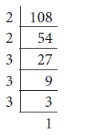
= 3√33X 4
= 3√33X3√4 (Laws of radicals - ii)
= 3×3√4 ( Laws of radicals- i)
order = 3; radicand = 4; coefficient = 3cube root of 108 is equal to whole cube root of 27 multiply 4
is equal to whole cube root of 3 power 3 multiply 4
is equal to whole cube root of 3power 3 multiply 3 root 4 (law 2)
is equal to 3× multiply cube root of 4 (law1 )
வரிசை is equal to 3; base is equal to 4; coefficient is equal to 33
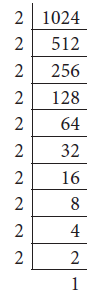
= (3√(23X23X23X2)) -2 [Laws of radicals - (i)]
= (3√23X3√23 X3√23X3√2)-2 [Laws of radicals – (ii)]
= (2X2X2X3√2)-2 [Laws of radicals – (i)]
= (8X3√2)-2 = (1/8)2X(1/3√2)2
= (1/64)
order= 3 ; radicand = 14 ; coefficient = 1 64
(These results can also be obtained using index notation).
Note
Consider the numbers 5 and 6. As 5 =√25 and 6=√36
Therefore, √26, √27, √28, √29, √30, √31, √32, √33, √34, and √35 are surds between 5 and 6.
Consider 3√2 =√32 X2= √18, 2√3 = √ 22X 3=√12
Therefore, √17, √15, √14, √13 are surds between 2√3 and 3√2.
(i) Addition and subtraction of surds : Like surds can be added and subtracted using the following rules:
ac( a±c), where b>0
ac(a±c) , a multiply nth root b plus or minus c nth root of b is equal to bracket of a plus or minus c nth root of b, b greater than zero
Example 2.22
Solution(i) 3√7 +5√7 = (3+5) √7 = 8√7. Th e answer is irrational.
Example 2.23 Simplify the following: (i) √63 -√175+√ 28 (ii) 2+
Solution
= 3√7- 5√7+2√7
= (3√7-2√7)-5√7
= 5√7- 5√7
= 0
=2+
=2+
=4+15
=(4+15-16) =3
is equal to 3root 7 minus 5root 7 plus 2root 7
is equal to (3root 7 minus 2 root 7) minus 5root 7
is equal to 5 root 7 minus 5 root 7
is equal to 0
ii) 2 cube root of 40 plus 3 cube root of 625 minus 4 cube root of 320
is equal to 2 cube root of 8 multiply 5 plus 3 cube root of 125 multiply 5 minus 4 cube root of 64 multiply 5 2
is equal to 2 cube root of 2 power 3 multiply 5 plus 3 multiply 5 cube root of 5 mInus 4 multiply 4 cube root of 5 2
is equal to 4 cube root off 5 plus 15 cube root of 5 minus cube root of 5 4plus 15
is equal to (4plus 15 minus 16) equal to 3 cube root of 5
Multiplication and division of surds Like surds can be multiplied or divided by using the following rules:
Multiplication property of surds |
Division property of surds |
(i) n√a x n√b=n√ab
|
(iii) n√a / n√b = n√a/b |
(ii) an√b X cn√d=acn√bd
where b,d>0 |
(iv)a n√b/c n√d= (a/c) n√(b/d) where b,d>0 |
Multiplication property of surds |
Division property of surds |
(i) Nth root of a multiply nth root of b is equal to nth root of ab A nth root of b multiply c nth root of d equal to acnth root of bd let b,d greater than 0 |
(iii) Nth root of a divide by nth root of b equal to whole nth root of a divide b (iv) A nth root of divide by c nth root of d equal to a divide by c multiply nth root of b by d let b,d greater than 0 |
Example 2.24 Multiply 3√40 and 3√16.
Solution 3√40X3√16=(3√2X 2X2X 5)X(3√ 2X 2X 2X 2)
=(2X3√5)X(2X3√2)=4X(3√2X3√5) =4 ×3√2X5
=
cube root of 40 multiply cube root of 16 is equal to (bracket of whole cube root of 2 multiply 2 multiply 2 multiply 5) multiply (cube root of 2 multiply 2 multiply 2 multiply 2)
is equal to (2 multiply cube root of 5) multiply (2 multiply cube root of 2) is equal to 4 multiply (cube root of 2 multiply cube root of 5) is equal to 4 × multiply cube root of 2X multiply 5
is equal to 4 cube root of 10
Example 2.25
Compute and give the answer in the simplest form: 2√72 X 5√32 X 3√50
Let us simplify
√72=√36x2=6√2
√32=√16x2=4√2
√50=√25x2=5√2
Solution
2√72 X 5√32 X 3√50=(2x6√2)X(5X4√2)X(3X5√2)
=2X5X3X6X4X5X√2X√2X√2
=3600X2√2
=7200√2
2root of 72 multiply 5root of 32 multiply 3root of 50 is equal to (bracket of 2 multiply 6 root of 2 multiply bracket of 5 multiply 4 root of 2 multiply bracket of 3 multiply 5 root of 2
is equal to 2 multiply 5 multiply 3 multiply 6 multiply 4 multiply 5 multiply root 2 multiply root 2 multiply root 2
is equal to 3600 multiply 2root of 2
is equal to 7200 root of 2
root 72 equal to root of 36 multiply2 equal to 6 root of 2
root 32 equal to root of 16 multiply2 equal to 4 root of 2
root 50 equal to root of 25 multiply2 equal to 5 root of 2
Example 2.26 Divide 9√8 by 6√6.
Solution
/ 81/9 /61/6 (Note that 18 is the LCM of 6 and 9)
= 82/18 /63/18 (How?)
= (82/63)1/6 (How ?)=(8x8/6x6x6)1/18
=(8/27)1/18=((2/3)3)1/18 =(2/3)1/6= 6√ 2/3
Activity-1
Is it interesting to see this pattern ?
√4 4/ 15= 4 √4/ 15 = and √5 5/ 24= 5√ 5/24 = Verify it. Can you frame 4 such new surds?
Activity-2
Take a graph sheet and mark O,A,B,C as follows,
In the square OABC,
OA = AB = BC = OC = 1unit
Consider right angled ∆OAC
AC = √12+ 12
= √2 unit [By Pythagoras theorem]
The length of the diagonal (hypotenuse)
AC =√ 2 , which is a surd.
Consider the following graphs:
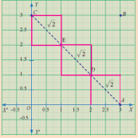
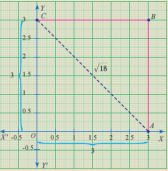
Let us try to find the length of AC in two different ways :
AC = AD+ DE+EC
(diagonals of units squares)
= √2+√2+√2
AC = 3√2units AC = √OA2+ OC2=√ 32 +√32
= √9+ √9
AC = √18 units
Are they equal? Discuss. Can you verify the same by taking different squares of different lengths?
Exercise 2.6
(i) 5√3 +18√3 -2√3 (ii) -
(iii) 3√75 +5√48 -√243 (iv) 5 2 -3
2.Simplify the following using multiplication and division properties of surds:
(i) √3 X√5 X√2 (ii) √35 / √7 (iii) X X
(iv) (7√a- 5√b) (7√a +5b) (v) (√225/ 729 -√ 25/144) /√16/81
3.If √2= 1.414, √3=1.732, √5= 2.236, √10= 3.162, then find the values of the following correct to 3 places of decimals.
(i) √40-√20 (ii) √300+√90-√8
4.Arrange surds in descending order : (i) (ii) 2√ , 3√ , √
5.Can you get a pure surd when you find
(i) the sum of two surds
(ii) the difference of two surds
Justify each answer with an example.
6.Can you get a rational number when you compute
(i) the sum of two surds
(ii) the difference of two surds
Justify each answer with an example.
Exercise 2.6 answer
1.(i) 21 √3 (ii) 33√5 (iii) 26 √3 (iv) 83 √5
2. (i) √30 (ii) √5 (iii) 30 (iv) 49a-25b (v) 5/16
3.(i) 1.852 (ii) 23.978
4. (i) 3√5> 6√3> 9√4 (ii) √√3 >2√3√5>3√4√ 7
5. (i) yes (ii) yes (iii) yes (iv) yes
6. (i) yes (ii) yes (iii) yes (iv) yes
Rationalising factor is a term with which a term is multiplied or divided to make the whole term rational.
Examples:
(i) √3 is a rationalising factor of √3 (since √3 × √3 = the rational number 3)
(ii) 7√54 is a rationalising factor of 7√ 53 (since their product = 7√ 57 =5 , a rational)
Thinking Corner
1. In the example (i) above, can √12 also be a rationalising factor? Can you think of any other number as a rationalising factor for √3 ?
2. Can you think of any other number as a rationalising factor for 7√53 in example (ii) ?
3. If there can be many rationalising factors for an expression containing a surd, is there any advantage in choosing the smallest among them for manipulation?
Progress Check Identify a rationalising factor for each one of the following surds and verify the same in each case: (i) √18 (ii) 5√12 (iii) 3√49 (iv) 1/√ 8
Can you guess a rationalising factor for 3+√2 + ? Th is surd has one rational part and one radical part. In such cases, the rationalising factor has an interesting form.
A rationalising factor for 3+√2 + is 3-√2. You can very easily check this.
(3+√2 )(3-√2)= (3)2-(√2)2
=9-2
=7 ,. a rational
What is the rationalising factor for a+ √b where a and b are rational numbers? Is it a- √b ? Check it. What could be the rationalising factor for √a +√b where a and b are rational numbers? Is it √a- √b ? Or, is it -√a+√b ? Investigate.
Surds like a+√b + and a-√b are called conjugate surds. What is the conjugate of b a +? It is − +b a. You would have perhaps noted by now that a conjugate is usually obtained by changing the sign in front of the surd!
Example 2.27 Rationalise the denominator of (i) 7/√14 (ii) 5+√3/ 5-√3
Solution (i) Multiply both numerator and denominator by the rationalising factor √14.
7/√14= 7/ 14 X√14/√14 =7√14/14 =√14/2
=(52+( √3)2 +2X5x√3)/25-3
=25+3+10√3/22 =28+10√3/22=2X[14+5√3]/22
= 14+5√3/11
Exercise 2.7
(i) 1/√50
(ii) 5/3√5
(iii) √75/√18
(iv) 3√5/√6
2 Rationalise the denominator and simplify
(i) √48 +√32/ √27 -√18 (ii) 5√3+ √2 /√3 +√2
(iii) 2√6- √5 /3√5- 2√6 (iv) √5/(√ 6+ 2)- √5/ √6- 2
3.Find the value of a and b if √7-2/ √7+ 2=a√7+b
If x = √5+ 2, then find the value of x2+1/ x2
Exercise 2.7 answer
1. (i) 56943x1011 (ii) 200057x103 (iii) 60x10-7 (iv) 9000002x104
2. (i) 3459000 (ii) 56780 (iii) 0.0000100005 (iv) 0.0000002530009
3. (i) 144x1028 (ii) 80x10-60 (iii) 2.5x1036
4.(i) 7.0x109 (ii) 9.4605284x1015km (iii) 9.1093822x10-31kg
5. (i) 1.505x108 (ii) 1.5522x1017 (iii) 1.224x107 (iv) 1.9558x10-1
Suppose you are told that the diameter of the Sun is 13,92,000 km and that of the Earth is 12,740 km, it would seem to be a daunting task to compare them. In contrast, if 13,92,000 is written as 1.392 ×106 and 12,740 as 1.274×104, one will feel comfortable. This sort of representation is known as scientific notation.
Since 1. 392.106/ 1.274.104≃ 14 /13. 102 ≃ 108
≃You can imagine 108 Earths could line up across the face of the sun.
Scientific notation is a way of representing numbers that are too large or too small, to be conveniently written in decimal form. It allows the numbers to be easily recorded and handled.
Here are steps to help you to represent a number in scientific form:
(i) Move the decimal point so that there is only one non-zero digit to its left.
(ii) Count the number of digits between the old and new decimal point. This gives ‘n’, the power of 10.
(iii)If the decimal is shift ed to the left , the exponent n is positive. If the decimal is shifted to the right, the exponent n is negative.
Expressing a number N in the form of N = a×10n where, 1< a<10 and ‘n’ is an integer is called as Scientific Notation.
The following table of base 10 examples may make things clearer:
Decimal notation |
Scientific notation |
100 |
1 x 102 |
1,000 |
1 x 103 |
10,000 |
1 x 104 |
1,00,000 |
1 x 105 |
10,00,000 |
1 x 106 |
1,00,00,000 |
1 x 107 |
Decimal notation |
Scientific notation |
0.01 |
1 x 10-2 |
0.001 |
1 x 10-3 |
0.0001 |
1 x 10-4 |
0.00001 |
1 x 10-5 |
0.000001 |
1 x 10-6 |
0.0000001 |
1 x 10-7 |
Let us look into few more examples.
Example 2.28 Express in scientific notation (i) 9768854 (ii) 0.04567891 (iii) 72006865.48
Solution
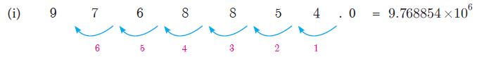
The decimal point is to be moved six places to the left. Therefore n = 6.
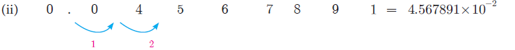
The decimal point is to be moved two places to the right. Therefore n =−2.
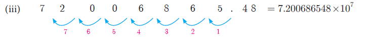
The decimal point is to be moved seven places to the left. Therefore n = 7.
The reverse process of converting a number in scientific notation to the decimal form is easily done when the following steps are followed:
(i) Write the decimal number.
(ii) Move the decimal point by the number of places specified by the power of 10, to the right if positive, or to the left if negative. Add zeros if necessary.
(iii) Rewrite the number in decimal form.
Example 2.29 Write the following numbers in decimal form: (i) 6.34 x 104
(ii) 2.00367 x10-5
Solution (i) 6. 34x 104
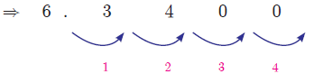
= 63400(ii) 2.00367 x10-5
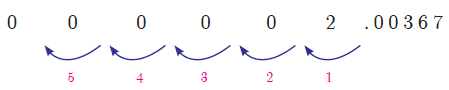
= 00000200367.
(i) If the indices in the scientific notation of two numbers are the same, addition (or subtraction) is easily performed.
Example 2.30 Th e mass of the Earth is 5.97×1024 kg and that of the Moon is 0.073 ×1024 kg. What is their total mass?
Solution Total mass = 5.97×1024 kg + 0.073 ×1024 kg
= (5.97 + 0.073) ×1024 kg
= 6.043 ×1024 kg
Example 2.31 Write the following in scientific notation : (i) (50000000)4
Solution
(i) (50000000)4=( 5.0x 107)4
= (5. 0)4x(107)4
= 625.0x1028
= 6.25x102x1028
= 6.25x1030
(ii) (0. 00000005)3= (5.0 x 10-8)3
=(5.0)3x(10-8)3
=(125.0)×(10)− 24
= 1.25X102X 10-24
= 1.5X10-22.
(iii) (300000)3 x (2000)4
= (3.0x105)3 x (2.0x103)4
= (3.0)3 x (105)3 x (2.0)4 x (103)4
= (27.0)3 X(1015 )x (16.0) x (1012 )
=(2.7x101) X(1015 )x (1.6x101) x (1012)
(iv) (4000000)3 /(0.00002)4
= (4.0x106)3 / (2.0x10-5)4 .
= (4.0)3 x (106)3 / (2.0)4 x (10-5)4
=(64.0) X(1018 )/ (16.0) x 10-20
=4x1018x10+20
=4.0x1038
Thinking Corner
1. Write two numbers in scientific notation whose product is 2. 83104.
2. Write two numbers in scientific notation whose quotient is 2. 83104.
Exercise 2.8
(i) 569430000000 (ii) 2000.57
(iii) 0.0000006000 (iv) 0.0009000002
Romen letter 1 569430000000 Romen letter 2 2000.57
Romen letter 3 0.0000006000 Romen letter 4 0.0009000002
2.Write the following numbers in decimal form:
(i) 3.459x 106 (ii) 5.678x104
(iii) 1.00005x 10-5 × − (iv) 2.530009 x10-7
Romen letter 1 3.459 multiply 10 power 6
Romen letter 2 5.678 multiply 10 power 4
Romen letter 3 1.00005x multiply 10 power minus 5
Romen letter 4 2.530009 x multiply 10 power minus 7
3.Represent the following numbers in scientific notation:
(i) (300000)2x(20000)4 (ii) (0.000001)11/ (0.005)3
(iii){ (0.00003)6x (0.00005)}/ {(0.009)3x(0.05)2}
Romen letter 1 (300000) power 2 multiply 20000 power 4 Romen letter 2 (0.000001) 11ன் கீழ் (0.005) 3
Romen letter 3 0.0000 power 6x(0.00005) } by {(0.009) 3x(0.05) power2}
4.Represent the following information in scientific notation:
(i) Th e world population is nearly 7000,000,000.
(ii) One light year means the distance 9460528400000000 km.
(iii) Mass of an electron is 0.000 000 000 000 000 000 000 000 000 00091093822 kg. 5.
(i) The world population is nearly 7000,000,000.
(ii) One light year means the distance 9460528400000000 km.
(iii) Mass of an electron is 0.000 000 000 000 000 000 000 000 000 00091093822 kg. 5.
5.Simplify: (i) (2.75 × 107) + (1.23 × 108) (ii) (1.598×1017) – (4.58 ×1015) (iii) (1.02 × 1010) × (1.20 × 10–3) (iv) (8.41 × 104) / (4.3 × 105)
Activity-3
The following list shows the mean distance of the planets of the solar system from the Sun. Complete the following table. Then arrange in order of magnitude starting with the distance of the planet closest to the Sun.
Planet |
Decimal form (in Km) |
Scientific Notation (in Km) |
Jupiter |
|
7.78 x 108 7.78 multiply 10 power 8 |
Mercury |
58000000 |
|
Mars |
|
2.28 x 108 2.28 multiply 10 power 8 |
Uranus |
2870000000 |
|
Venus |
1008000000 |
|
Neptune |
4500000000 |
|
Earth |
|
1.5 x 108 1.5 multiply 10 power 8 |
Saturn |
|
1.43 x 108 1.43 multiply 10 power 8 |
Exercise 2.9
Multiple Choice Questions
1. If n is a natural number then √n is
(1) always a natural number.
(2) always an irrational number.
(3) always a rational number
(4) may be rational or irrational
2. Which of the following is not true?.
(1) Every rational number is a real number.
(2) Every integer is a rational number.
(3) Every real number is an irrational number.
(4) Every natural number is a whole number.
3. Which one of the following, regarding sum of two irrational numbers, is true?
(1) always an irrational number.
(2) may be a rational or irrational number.
(3) always a rational number.
(4) always an integer.
4. Which one of the following has a terminating decimal expansion?.
(1)5/ 64 (2) 8/9 (3) 14/15 (4) 1/12
5. Which one of the following is an irrational number
(1) √25 (2) √49 (3) 7/11 (4) π
6. An irrational number between 2 and 2.5 is
(1) √11 (2) √5 (3) √2.5 (4) √8
7. The smallest rational number by which 1/3 should be multiplied so that its decimal expansion terminates with one place of decimal is
(1) 1/10 (2) 3/10 (3) 3 (4) 30
8. If 1/7=0. = then the value of 5/7 is
(1) 0. (2) 0. (3) 0. (4) 0.714285
9. Find the odd one out of the following.
(1) √32 x√2 (2) √27/√3 (3) √72x √8 (4) √54 /√18
10. 0. 0.3 + =
(1) 0.6 (2) 0. 0(3) 0.6 (4) 0.68
11. Which of the following statement is false?
(1) The square root of 25 is 5 or −5 (3) √25= 5
(2) −√25=- 5 (4) √2=5± 5
12. Which one of the following is not a rational number?
(1) √ 8/18 (2) 7/3 (3) √ 0.01 (4) √13
13. √27+ √12 =
(1) √39 (2) 5√6 (3) 5√3 (4) 3√5
14. If √80=k√5, then k=
(1) 2 (2) 4 (3) 8 (4) 16
15. 4√7x2√3 =
(1) 6√10 (2) 8√21 (3) 8√10 (4) 6√21
16. When written with a rational denominator, the expression 2√3/ 3√2 can be simplified as
(1) √2/3 (2) √3/2 (3) √6/3 (4) 2/3
17. When (2√5- √2)2 is simplified, we get
(1) 4√5+ 2√2 +(2) 22-4√10 (3) 8-4√10 (4) 2√10-2
18. (0.000729)-3/4x(0.09)-3/4 = DASH
(1) 103/ 33 (2) 105/35 (3) 102/32 (4) 106/ 103
19. If √9x =3√92 ,then x = DASH
(1) 2/3 (2) 4/3 (3) 1/3 (4) 5/3
20. The length and breadth of a rectangular plot are 5×10 power 5 and 4 multiply 10 power4 metres respectively. Its area is DASH.
(1) 9×101 m2 (2) 9×109 m2 (3) 2×1010 m2 (4) 20×1020 m2
9 multiply 10 power 1 m square
9 multiply 10 power 9 m square
2 multiply 10 power 10 m square
20 multiply 10 power 20 m square
Answer Exercise 2.8
1. (4) 2. (3) 3. (2) 4. (1) 5. (4) 6. (2) 7. (2) 8. (2) 9. (4) 10. (1)
11. (4) 12. (4) 13. (4) 14. (2) 15. (2) 16. (3) 17. (2) 18. (4) 19. (2) 20. (3)
Points to Remember
In real life, I assure you, there is no such things as Algebra. - Fran Lebowitz
Diophantus
Diophantus of Alexandria an Alexandrian Hellenistic mathematician who lived for about 84 years, was born between A.D(C.E) 201 and A.D(C.E) 215. Diophantus was the author of a series of books called Arithmetica. His texts deal with solving algebraic equations. He is also called as “the father of algebra”.
Learning Outcomes
• To understand the classification of polynomials and to perform basic operations.
• To evaluate the value of a polynomial and understand the zeros of polynomial.
• To understand the remainder and factor theorems.
• To use Algebraic Identities in factorisation.
• To factorise a quadratic and a cubic polynomial.
• To use synthetic division to factorise a polynomial.
• To find GCD of polynomials.
• Able to draw graph for a given linear equation.
• To solve simultaneous linear equations in two variables by Graphical method
and Algebraic method
• To understand consistency and inconsistency of linear equations in two variables.
Why study polynomials?
This chapter is going to be all about polynomial expressions in algebra. These are your friends, you have already met, without being properly introduced! We will properly introduce them to you, and they are going to be your friends in whatever mathematical journey you undertake from here on.
(a+1)2=a2+2a+1
Bracket open a plus 1 whole power 2 is equal to a power 2 plus 2 a plus 1
Now that’s a polynomial. Th at does not look very special, does it? We have seen a lots of algebraic expressions already, so why to bother about these? Th ere are many reasons why polynomials are interesting and important in mathematics. For now, we will just take one example showing their use. Remember, we studied lots of arithmetic and then came to algebra, thinking of variables as unknown numbers. Actually, we can now get back to numbers and try to write them in the language of algebra.
Consider a number like 5418. It is actually 5 thousand 4 hundred and eighteen.
Write it as: 5 X 1000 + 4 X 100 + 1 X 10 + 8 5 multiply 1000 plus 4 multiply 100 plus 1 multiply 10 plus 8
which again can be written as: 5 X 103 + 4 X 102 + 1 X 101 + 8 5 multiply 10 powers 3 plus 4 multiply 10 power 2 plus 1 multiply 10 10 power 1 plus 8
Now it should be clear what this is about. Th is of the form 5x3 + 4x2 + x + 8, 5 x power 3 plus 4 x power 2 plus x plus 8 comma which is a polynomial. How does writing in this form help? We always write numbers in decimal system, and hence always x = 10. Then what is the fun? Remember divisibility rules? Recall that a number is divisible by 3 only if the sum of its digits is divisible by 3. Now notice that if x divided by 3 gives 1 as remainder, then it is the same for x2, x3, x power 2 , x power 3 etc. They all give remainder 1 when divided by 3. So, you get each digit multiplied by 1, added together, which is the sum of digits. If that is divisible by 3, so is the whole number. You can check that the rule for divisibility by 9, or even divisibility by 2 or 5, can be proved similarly with great ease. Our purpose is not to prove divisibility rules but to show that representing numbers as polynomials shows us many new number patterns. In fact, many objects of study, not just numbers, can be represented as polynomials and then we can learn many things about them.
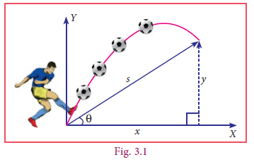
In algebra we think of x2, 5x2–3, 2x+7 etc as functions of x. We draw pictures to see how the function varies as x varies, and this is very helpful to understand the function. And now, it turns out that a good number of functions that we encounter in science, engineering, business studies, economics, and of course in mathematics, all can be approximated by polynomials, if not actually be represented as polynomials. In fact, approximating functions using polynomials is a fundamental theme in all of higher mathematics and a large number of people make a living, simply by working on this idea.
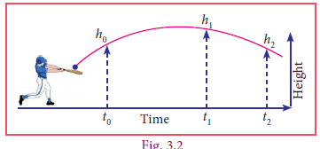
Polynomials are extensively used in biology, computer science, communication systems... the list goes on. The given pictures (Fig. 3.1, 3.2 & 3.3) may be represented as a quadratic polynomial. We will not only learn what polynomials are but also how we can use them like in numbers, we add them, multiply them, divide one by another, etc.,
Observe the given figures.
Fig 3.3
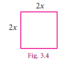
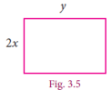
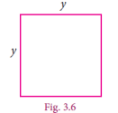
The total area of the above 3 figures is x xy y 422 2 + + , we call this expression as an algebraic expression. Here for different values of x and y we get different values of areas. Since the sides x and y can have different values, they are called variables. Thus, a variable is a symbol which can have various numerical values.
Variables are usually denoted by letters such as x, y, z, etc. In the above algebraic expression, the numbers 4, 2 are called constants. Hence the constant is a symbol, which has a fixed numeric value.
Constants
Any real number is a constant. We can form numerical expressions using constants and the four arithmetical operations.
Examples of constant are 1, 5, minus 32, 73, minus root 2, 8.432, 1000000 and so on.
Variables
The use of variables and constants together in expressions give us ways of representing a range of numbers, one for each value of the variable. For instance, we know the expression 2Πr, it stands for the circumference of a circle of radius r. As we vary r, say, 1cm, 4cm, 9cm etc, we get larger and larger circles of circumference 2Π, 8Π, 18Π etc.,
The single expression 2Πr is a short and compact description for the circumference of all these circles. We can use arithmetical operations to combine algebraic expressions and get a rich language of functions and numbers. Letters used for representing unknown real numbers called variables are x, y, a, b and so on.
Algebraic Expression
An algebraic expression is a combination of constants and variables combined together with the help of the four fundamental signs.
Examples of algebraic expression are
X3-4x2+8x-1, 4xy2+3x2y-5/4xy+9,5x2-7x+6
X cube minus 4 x y power 2 plus 8 x minus 5 by 4 x y plus 9 comma 5 x power 2 minus 7 x plus 6
Coefficients
Any part of a term that is multiplied by the variable of the term is called the coefficient of the remaining term.
For example,
X2+5x-24 x power 2 plus 5x minus 24 is an algebraic expression containing three terms. The variable of this expression is x, coefficient of x2 is 1, the coefficient of x is 5 and the constant is –24 (not 24).
Activity-1
Write the Variable, Coefficient and Constant in the given algebraic expression
Expression |
x + 7 |
3y – 2 |
5x2 |
2xy +11 |
21 - p +7 |
-8 +3a |
Variable |
X |
|
|
X,y |
|
|
Coefficient |
1 |
|
|
|
-1/2 |
|
constant |
7 |
|
|
|
|
-8 |
A polynomial is an arithmetic expression consisting of variables and constants that involves four fundamental arithmetic operations and non-negative integer exponents of variables.
Polynomial in One Variable
An algebraic expression of the form p(x)=anxn+an-1xn-1+….+a2x2+a1x+a0 is called Polynomial in one variable x of degree ‘n’ where a0,a1,a2,…..an are constants (an ≠ 0) and n is a whole number.
In general polynomials are denoted by
f(x),g(x),p(t),q(z) and r(x) and so on.
f of x comma g of x comma p of t comma q of z r of bracket x
Note
The coefficient of variables in the algebraic expression may have any real numbers, whereas the powers of variables in polynomial must have only non-negative integral powers that is, only whole numbers. Recall that a0 = 1 for all a.
For example,
S.No |
Given expression |
Polynomial / not a polynomial |
Reason |
1 |
4y3+2y2+3y+6 4 y cube plus 2 y power 2 plus 3 y plus 6
|
Polynomial |
Non- negative integral power |
2 |
4x-4+5x4 4 x power minus 4 plus 5 x power 4 |
Not a polynomial |
One of the powers is negative (–4) |
3 |
m2+4/5 m+8 M power 2 plus 4 by 5 m plus 8 |
Polynomial |
Non- negative integral power |
4 |
√5y2 Root 5 y power 2 |
Polynomial |
Non- negative integral power |
5 |
2r2+3 r-1+1/ r 2 r power 2 plus 3 r minus one plus 1 by r |
Not a polynomial |
One of the power is negative 1/r =r-1 |
6 |
8+√q 8 plus root q |
Not a polynomial |
power of q is fraction (√q = q1/2 ) |
7 |
√8 P2+5 p-7 Root 8 p power 2 plus 5 p minus 7 |
Polynomial |
Non- negative integral power |
8 |
5n4/6+6n-1 5 n power 4 by 5 plus 6 n minus 1 |
Not a polynomial |
One of the power of n is a fraction 4/5 |
Standard Form of a Polynomial
We can write a polynomial p(x) in the decreasing or increasing order of the powers of x. This way of writing the polynomial is called the standard form of a polynomial.
For example: (i) x x x 84796 4 3 2 + - - + (ii) 5 – 3y + 6y2 + 4y3 – y4
Degree of the Polynomial
In a polynomial of one variable, the highest power of the variable is called the degree of the polynomial.
In case of a polynomial of more than one variable, the sum of the powers of the variables in each term is considered and the highest sum so obtained is called the degree of the polynomial.
For example:(i)
8x4+4x3-7x2-9x+6 (ii)5-3y+6y2+4y3-y4
Romen letter 1 x power 4 plus 4 x power 3 minus 7x power 2 minus 9x plus 6
Romen letter 2 5 minus 3y plus 6y power 2 plus 4y power 3 –minus y power 2
Activity-2
Write the following polynomials in standard form.
S.No |
Polynomial |
Standard Form |
1 |
5m4 -3m+7m2+8 5 m power 4 minus 3 m plus 7 m power 2 plus 8 |
|
2 |
2/3y+8y3-12+√5y2 2 multiply 2 by 3 y plus 8 y power 3 minus 12 plus root 5 y power 2 |
|
3 |
12p2-8p5-10p4-7 |
|
This is intended as the most significant power of the polynomial. Obviously when we write x2+5x the value of x2 becomes much larger than 5x for large values of x. So, we could think of x2 + 5x being almost the same as x2 for large values of x. So, the higher the power, the more it dominates. That is why we use the highest power as important information about the polynomial and give it a name.
Example 3.1 Find the degree of each term for the following polynomial and also find the degree of the polynomial 6ab8+ 5a2b3c2-7ab+4b2c+2
6 a b power 8 plus 5 a power 2 b power 3 c power 2 minus 7 a b plus 4 b power 2 c plus 2
Solution Given polynomial is 6ab8+ 5a2b3c2-7ab+4b2c+2
6 a b power 8 plus 5 a power 2 b power 3 c power 2 minus 7 a b plus 4 b power 2 c plus 2
Degree of each of the terms is given below.
6ab8 has degree (1+8) = 9
5a2 b3 c2 has degree (2+3+2) = 7
7ab has degree (1+1) = 2
4b2c has degree (2+1) = 3
Th e constant term 2 is always regarded as having degree Zero.
The degree of the polynomial 6ab8+ 5a2b3c2-7ab+4b2c+2
=the largest exponent in the polynomial
= 9
Solution; The degree of the polynomial 6 a b power 8 plus 5 a power 2 b power 3 c power 2 minus 7 a b plus 4 b power 2 c plus 2 is 9
A very Special Polynomial
We have said that coefficients can be any real numbers. What if the coefficient is zero? Well, that term becomes zero, so we won’t write it. What if all the coefficients are zero? We acknowledge that it exists and give it a name.
It is the polynomial having all its coefficients to be zero.
g(t)=0t4+0t2-0t , h(p)=0p2+0
G of t equal 0 t power 4 plus 0 t power 2 minus 0 power t, h of p equal 0 p power 2 minus 0 p plus 0
From the above example we see that we cannot talk of the degree of the zero polynomial, since the above two have different degrees but both are zero polynomial. So, we say that the degree of the zero polynomial is not defi ned. Th e degree of the zero polynomial is not defined
Types of Polynomials
(i) Polynomial on the basis of number of terms
|
||
MONOMIAL |
A polynomial having one term is called a monomial Examples : 5, 6m, 12ab 5 comma 6 m comma 12 a b |
|
BINOMIAL |
A polynomial having two terms is called a Binomial Examples : 5x+3, 4a-2,10p+1 5 x plus 3 comma 4 a minus 2 comma 10 p plus 1 |
|
TRINOMIAL |
A polynomial having three terms is called a Trinomial Example : , 4x2+8x- 12, 3a2+4a+10 4x power 2 plus 8 x minus 12 3 a power 2 plus 4 a plus 10
|
|
(ii) Polynomial based on degree
|
|
CONSTANT |
A polynomial of degree zero is called constant polynomial Examples : 5,-7,2/3,√ 5 5 comma minus 7 comma 2 by 3 comma root 5 |
LINEAR |
A polynomial of degree one is called linear polynomial Examples : 410x- 7 410 x minus 7 |
QUADRATIC |
A polynomial of degree two is called quadratic polynomial Example : 2√ 5x2+8x+4 2 root 5 x power 2 plus 8 x minus 4 |
CUBIC |
A polynomial of degree three is called cubic polynomial Example :12y3,6m3-7m+4 12 y power 3 comma 6 m power 3 minus 7 m plus 4 |
Example 3.2 Classify the following polynomials based on number of terms.
S.No |
Polynomial |
Number of Terms |
Type of polynomial based of terms |
1 |
5t3 +6t+8t2 5 t power 3 plus 6 t plus 8t power 2 |
3 Terms |
Trinomial |
2 |
y-7 Y minus 7 |
2 Terms |
Binomial |
3 |
2/3r4 2 by 3 r power 4 |
1 Term |
Monomial |
4 |
6y5 +3y-7 6y power 5 plus 3ymminus 7 |
3 Terms |
Trinomial |
5 |
8m2+7m2 |
Like Terms. So,,it is 15m2 which is 1 term only |
Monomial |
Example 3.3 Classify the following polynomials based on their degree.
S.No |
Polynomial |
Degree |
Type |
1 |
3√4z+7 3 root 4 z plus 7 |
Degree one |
Linear polynomial |
2 |
Z3-z2+3 X power 3 minus x power 2 plus 3 |
Degree three |
Cubic Polynomial |
3 |
√7 root 7 |
Degree zero |
Constant Polynomial |
4 |
y2 -√8 Y power 2 root 8 y |
Degree two |
Quadratic Polynomial |
We now have a rich language of polynomials, and we have seen that they can be classified in many ways as well. Now, what can we do with polynomials? Consider a polynomial on x.
We can evaluate the polynomial at a particular value of x. We can ask how the function given by the polynomial changes as x varies. Write the polynomial equation p(x) = 0 and solve for x. All this is interesting, and we will be doing plenty of all this as we go along. But there is something else we can do with polynomials, and that is to treat them like numbers! We already have a clue to this at the beginning of the chapter when we saw that every positive integer could be represented as a polynomial.
Following arithmetic, we can try to add polynomials, subtract one from another, multiply polynomials, divide one by another. As it turns out, the analogy between numbers and polynomials runs deep, with many interesting properties relating them. For now, it is fun to simply try and define these operations on polynomials and work with them.
Addition of Polynomials Th e addition of two polynomials is also a polynomial.
Note Only like terms can be added. 3x2 + 5x2 gives 8x2 but unlike terms such as 3x2 and 5x3 when added gives 3x2 + 5x3, a new polynomial.
Example 3.4 If p(x)=4 x2-3x+2 x3 +5 and q(x)= x2 +2x+4 then find p(x)+q(x)
P of x equal 4 x power 2 minus 3 x plus 2x power 3 plus 5
Q of x equal x power 2 plus 2x plus 4
P of x plus q of x
Solution
Given Polynomial |
Standard form
|
p(x)=4 x2-3x+4 x3 +5 4 x power 2 minus 3 x plus 2x power 3 plus 5
|
2x3 +4 x2 -3x+5 2 x power 3 plus 4 x power 2 minus 3 x plus 5 |
q(x)= x2 +2x+4 Q of x equal x power 2 plus 2x plus 4
|
x2 +2x+4 X power 2 plus 2 x plus 4 |
P(x)+q(x)=2x3+5x2-x+9 P of x plus q of x equal to 2 is equal to 2 x power 3 plus 5 x power 2 minus x plus 9
|
|
We see that p(x) + q(x) is also a polynomial. Hence the sum of any two polynomials is also a polynomial.
Subtraction of Polynomials The subtraction of two polynomials is also a polynomial.
Note Only like terms can be subtracted. 8x2 – 5x2 gives 3x2 but when 5x3 is subtracted from 3x2 we get, 3x2 –5x3, a new polynomial.
Example 3.5 +
If P(x)=4X2-3x+2X2+5 and q(x)= X2+2x+x , then find p(x)-q(x)
P(x) = 4x2 – 3x + 2x3 + 5 and q(x) = x2 + 2x + 4 and, p(x) + q(x)
P of x equal 4 x power 2 minus 3 x plus 2x power 3 plus 5
Q of x equal x power 2 plus 2x plus 4
P of x plus q of x
Solution
Given Polynomial |
Standard form
|
p(x)=4 x2-3x+2 x3 +5 P of x equal 4 x power 2 minus 3x plus 2 x power 3 plus5 |
2x3+4x2 -3x+5 2 x power 3 plus 4 x power 3 minus 3 x plus 5 |
q(x)= x2 +2x+4 q of x equal x power 2 plus 2x plus 2 x plus 4 |
x2 +2x+4 x power 2 plus 2x plus 4 |
P(x) - q(x)=2x3+3x2 -5x+1 P of x minus q of x equal 2 multiply x power 3 plus 3 x power 2 minus 5x plus 1 |
|
We see that p(x) – q(x) is also a polynomial. Hence the subtraction of any two polynomials is also a polynomial.
Multiplication of Two Polynomials
Divide a rectangle with 8 units of length and 7 units of breadth into 4 rectangles as shown below, and observe that the area is same, this motivates us to study the multiplication of polynomials.
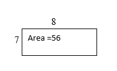
5 3
5 |
3 |
30 |
18 |
1
6
For example, considering length as (x+1) and breadth as (3x+2) the area of the rectangle can be found by the following way.
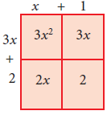
Hence the area of the rectangle is = 3x2 + 3x + 2x + 2 = 3x2 + 5x + 2
3 x power 2 plus 5 x plus 2
Example 3.6 Find the product (4x – 5) 4X minus 5 and (2x2 + 3x – 6). ) 2x power 2 plus 3x minus 6
Solution
To multiply (4x – 5) and (2x2 + 3x – 6) distribute each term of the first polynomial to every term of the second polynomial. In this case, we need to distribute the terms 4x and –5. Then gather the like terms and combine them:
(4x – 5) (2x2 + 3x – 6)=
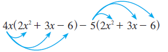
=8x3+12x2-24x-10x2-15x+30
=8x3+2x2-39x+30
Equal 8x power 3 plus 2x power 2 minus 39 x plus 30
Aliter: You may also use the method of detached coefficients:
2 +3 -6
+4 -5
–10 – 15 +30
8 12 –24
8 +2 –39 +30
(4x –5) (2x2+3x–6) = 8x3 + 2x2 – 39x + 30
Solution ; bracket open 4 x minus 5 bracket close bracket open 2 x power 2 plus 3 x minus 6 bracket close equal 8 x power 3 pl us 2 x power 2 minus 39 x plus 30